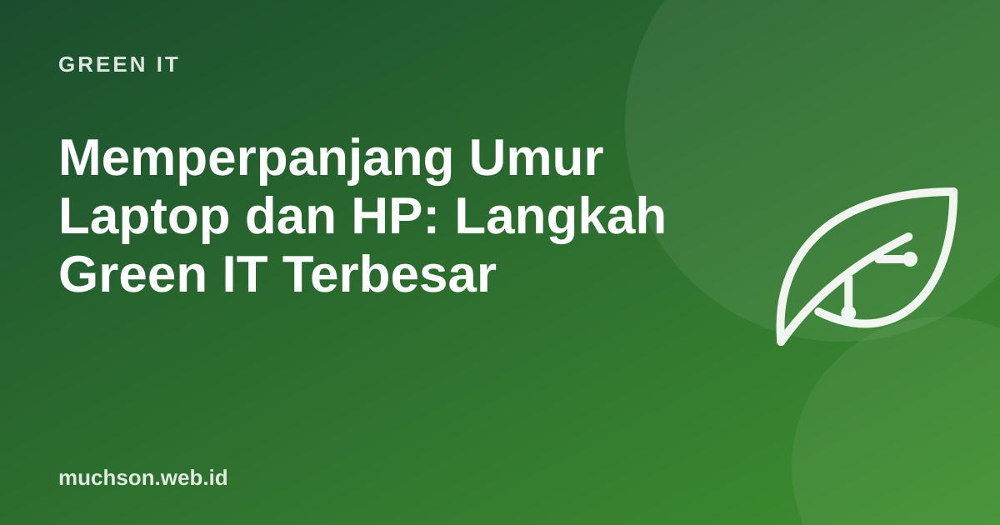

Memperpanjang Umur Laptop dan HP: Langkah Green IT Terbesar
Untuk sebagian besar ponsel dan laptop, jejak karbon terbesar sudah terjadi sebelum perangkat sampai di tangan Anda: saat bahan ditambang, chip dibuat, dan perangkat dirakit. Karena itu, langkah paling efektif yang bisa dilakukan individu dan kantor sering kali bukan membeli perangkat "hijau" terbaru, melainkan memakai perangkat yang ada lebih lama.

Membagi emisi produksi dengan tahun pemakaian
Bila emisi pembuatan sebuah laptop dibagi dengan berapa tahun ia dipakai, setiap tahun tambahan menurunkan emisi per tahun secara nyata.
Angka bawaan hanyalah contoh. Banyak produsen besar menerbitkan laporan lingkungan per model yang mencantumkan jejak karbon dan porsinya dari produksi dan pemakaian.
Perawatan yang paling berpengaruh
Upgrade murah sebelum mengganti
| Gejala | Upgrade | Perkiraan dampak |
|---|---|---|
| Laptop lama lambat menyala dan membuka aplikasi | Ganti HDD ke SSD | Sering terasa seperti laptop baru untuk kerja kantor |
| Banyak tab membuat macet | Tambah RAM (bila bisa) | Multitasking lebih lancar |
| Baterai cepat habis | Ganti baterai | Umur pakai bertambah beberapa tahun |
| Ponsel penuh | Kartu memori atau cadangan cloud | Ruang kosong kembali |
Kapan memang sebaiknya mengganti
- Tidak lagi mendapat pembaruan keamanan dan dipakai untuk data penting (perbankan, data pelanggan).
- Biaya perbaikan mendekati harga perangkat pengganti yang setara.
- Kebutuhan kerja benar-benar tidak terpenuhi lagi.
- Saat mengganti, pertimbangkan perangkat rekondisi berkualitas, dan pastikan perangkat lama dipakai ulang atau didaur ulang resmi.
Saat membeli, perhatikan berapa lama produsen menjanjikan pembaruan sistem dan keamanan, ketersediaan suku cadang, dan kemudahan perbaikan. Ini sama pentingnya dengan spesifikasi.
Tanya jawab
Apakah perangkat rekondisi aman?
Berapa lama idealnya laptop kantor dipakai?
Apa itu hak memperbaiki (right to repair)?
Sumber dan bacaan lanjut
- Apple: Product Environmental Reports
- Sampah elektronik: cara mengelola (artikel terkait)
- Laptop lemot: cara mempercepat (artikel terkait)